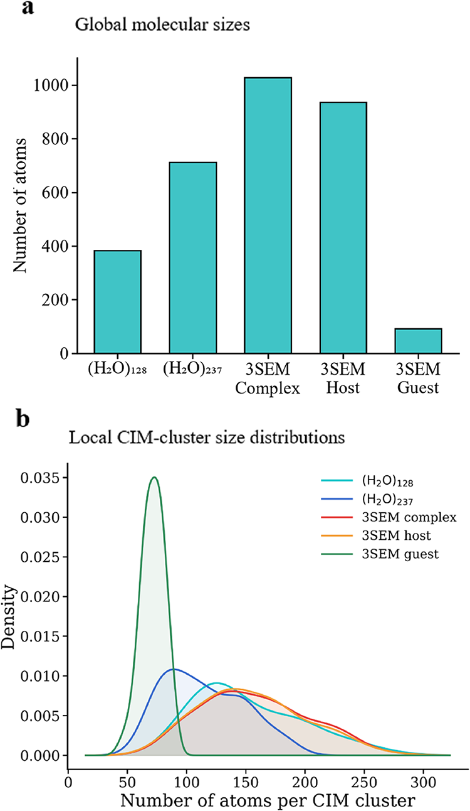
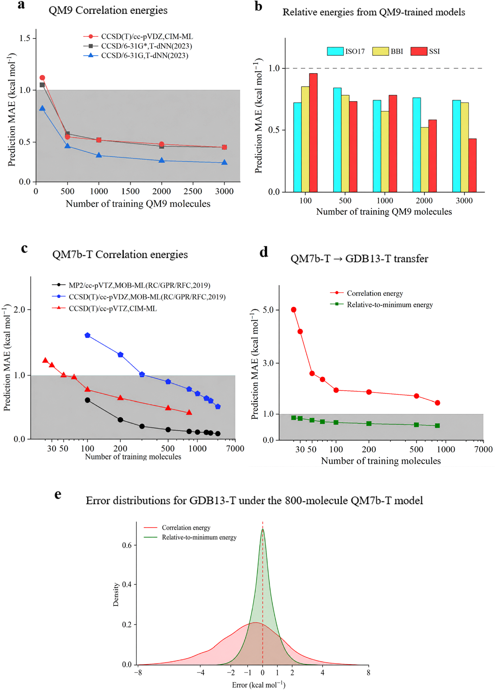
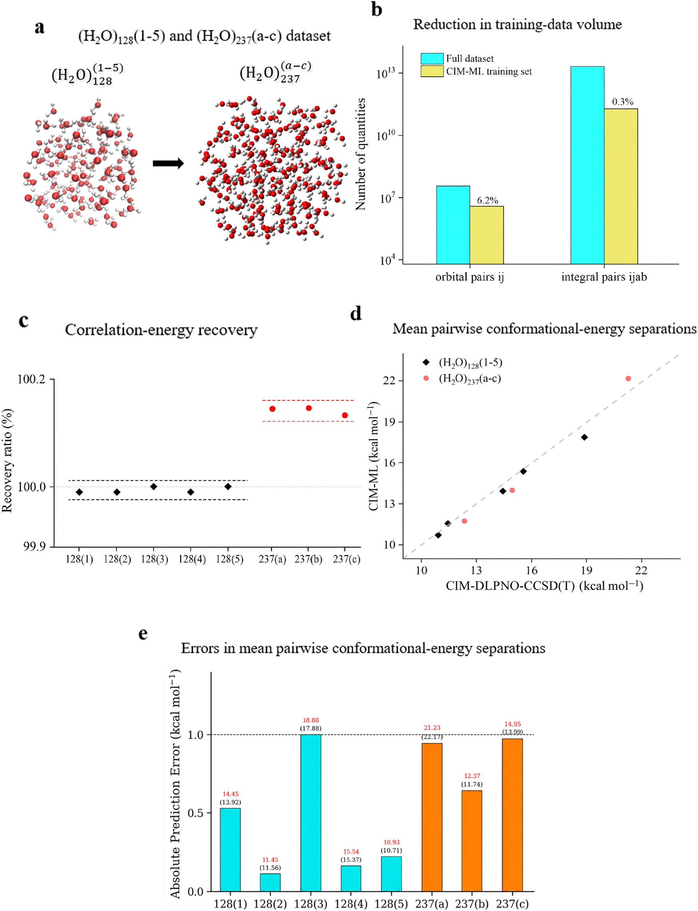
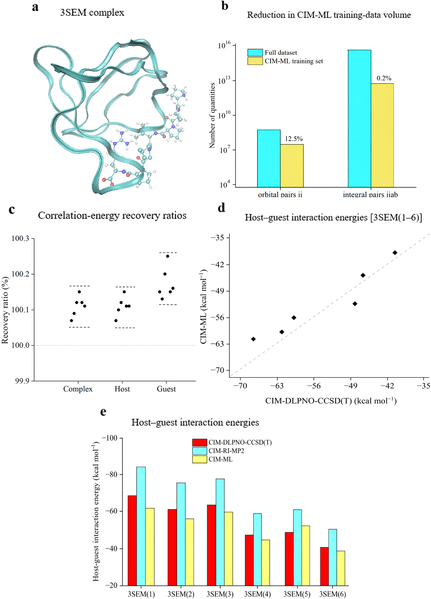

CIM-ML：用局部轨道对校正，把耦合簇级能量扩展到千原子体系
论文原文 ↗论文：Local Correlation-Based Machine Learning Enables Coupled-Cluster-Level Energetics for Thousand-Atom Molecular Systems，Hua Feng、Shuhua Li、Jing Ma、Wei Li，Journal of Chemical Theory and Computation，2026。DOI｜
大体系中的小能量差，需要高精度信息反复复用
比较水团簇的构象，或者判断蛋白质与配体的相互作用，研究者关心的往往只是几个 kcal/mol 的能量差。体系却可能包含数百至上千个原子，小差值对电子相关的处理很敏感。耦合簇 CCSD(T) 是常用高精度方法，但为大量大分子构型逐一求解，计算和存储成本都很高。
机器学习可以学习高精度计算相对于低成本方法的能量校正。问题在于，若仍以完整大体系作为一个训练样本，高精度标签本身就很昂贵，电子表示也随体系变复杂。CIM-ML 把学习对象进一步拆到局部占据轨道对：只在少量代表性的局部电子环境上计算高精度校正，再按局部相关方法的能量表达式拼回总能量。作者由此将同一批高精度信息复用于不同构型和更大的体系。
为什么能按局部轨道分解
Hartree–Fock 把电子放在平均场中，电子彼此避让和协同运动带来的额外能量贡献称为电子相关能。MP2 以二阶微扰近似计算它，成本较低；CCSD(T) 用单、双激发及微扰三激发更精细地处理相关贡献。
Cluster-in-molecule，简称 CIM，在整分子里围绕占据局域轨道建立相互重叠的小簇。局域轨道由分子轨道重新组合得到，其电子分布集中在某个原子或键附近。固定的局部性准则为每个中心选出相应的轨道环境，使学习对象的大小与整个分子的原子数分开。

原图 Fig.1。上方比较水团簇和蛋白质复合物的总原子数，下方给出 CIM 局部簇的大小分布。整体系扩大时，局部环境仍保持有限规模，为复用轨道对模型提供基础。
从一个水团簇构型走到完整能量
以论文的 128 水分子团簇为例，输入是原子种类与坐标。作者从 GFN0-xTB 分子动力学取得构型，再进行 HF 单点计算与轨道局域化，由 CIM 准则构建局部簇。较低成本的 CIM-RI-MP2 提供基准能量、双电子积分和激发振幅。RI 使用辅助基组近似表示双电子积分，减少计算负担。
对于每一对占据轨道 i、j，模型要预测高、低级相关能之差：
\[ \Delta E_{ij}=E_{ij}^{\mathrm{CIM-DLPNO-CCSD(T)}}-E_{ij}^{\mathrm{CIM-RI-MP2}}. \]
DLPNO 根据轨道对选择贡献重要的未占据轨道，缩小局部耦合簇计算空间。训练标签来自被选中局部簇的这两级计算。
网络输入由轨道对的电子结构量组成：双电子积分描述轨道之间的电子相互作用，MP2 激发振幅反映占据轨道向未占据轨道激发的贡献，再加入轨道对能量、距离等信息。不同局部簇的原始数组长度不同，作者按绝对值选取主要项，分箱计算和、范数、均值与标准差，压缩成固定长度向量。对角轨道对使用 147 维，非对角轨道对使用 286 维。
三个神经网络分别处理对角轨道对、同一中心的非对角轨道对，以及不同中心的非对角轨道对。它们各自将对应向量映射为一个能量校正值。使用时，新构型完成 HF 和低级 MP2 后，按同样规则生成特征，由模型预测所有局部轨道对校正，再按 CIM 能量表达式处理重叠和计数，汇总到低级能量上。
这样的总能量具有广延性，即体系增加时能量随其组成累加。不同构型的总能量相减可比较构象；复合物、主体与配体的能量组合可求相互作用能。局部预测由此进入实际关心的小能量差。
从小分子学习局部校正
作者先在 QM9、QM7b 等小分子集合中检验轨道对学习，再用于更大有机分子、构象能和非共价相互作用。随着训练数据增加，相关能误差降低；由最多含 7 个重原子的 QM7b 迁移到最多含 13 个重原子的 GDB13 子集时，使用 800 个训练分子，构象相对能量 MAE 为 0.56 kcal/mol。MAE 是预测与参考差值的绝对值平均。

原图 Fig.2。比较轨道对校正随训练数据量的变化，并展示构象、非共价相互作用及向较大分子迁移的结果。局部模型最终通过能量加总和做差服务于整分子任务。
一个水构型的高精度信息，迁移到更多构型和更大团簇
水体系的核心测试从一个 (H₂O)₁₂₈ 构型开始：从其 216 个局部簇中选 150 个训练，再预测另外 4 个同尺寸构型和 3 个 (H₂O)₂₃₇ 构型。这些训练环境对应八个完整构型中约 6.2% 的轨道对，模型学习水氢键网络的局部相关校正。
作者以同一级局部耦合簇计算为参考，比较不同构象的能量分离。图中用某构型与同组其他构型之间绝对能量差的平均值表征这种分离，CIM-ML 的 MAE 为 0.57 kcal/mol，重现尺度约在 1 kcal/mol 以内。有限局部环境因而能够携带可跨构型、跨团簇尺寸复用的高精度信息。

原图 Fig.3。a、b 展示水团簇及训练环境覆盖，c 比较相关能恢复，d、e 展示构象能量分离与误差。训练来自一个 128 水构型，应用包括更大的 237 水团簇。
千原子蛋白质配体的相互作用能得到改善
3SEM 复合物含 1,027 个原子，由 935 原子的主体与 92 原子的配体组成。作者针对这个领域，从第一个构型的复合物、主体与配体中选 500 个局部簇训练，再对六个构型计算三者的能量。相互作用能由复合物能量减去主体与配体能量得到，直接联系分子识别问题。
以 CIM-DLPNO-CCSD(T)/cc-pVDZ 为参考，低级 CIM-RI-MP2 的相互作用能 MAE 为 12.92 kcal/mol，加入轨道对机器学习校正后降为 3.98 kcal/mol。图中校正后的能量随构型变化更接近高精度结果，说明少量局部耦合簇数据能够实质改善大体系的能量比较。

原图 Fig.4。a、b 给出 3SEM 及局部训练环境；c 比较复合物、主体与配体的相关能恢复；d、e 比较相互作用能。机器学习校正后的黄柱整体向高精度参考红柱靠近。
CIM-ML 将高精度标签从完整大分子下沉到有限局部环境，又沿物理能量分解把预测组装回整体系。水与蛋白质采用各自适配的局部模型，展示了这条路线怎样围绕目标化学环境训练，并在大型分子构型集合中复用高精度相关信息。这使重复获取耦合簇级能量从“每个大构型重新计算”转向“局部知识学习与复用”。
原始摘要完整中文翻译
数据密集的分子研究流程越来越需要为大量分子与构型获得一致的能量数据。高精度数据则稀缺得多，因为决定构象偏好和分子识别的小能量差，可能需要准确处理电子相关。含单、双激发及微扰三激发的耦合簇方法［CCSD(T)］提供了一个被广泛使用的基准，但对中大型分子体系反复计算时，其成本会高到难以承受。机器学习已能为小分子快速提供耦合簇质量的预测，尤其是通过学习对低成本计算的高精度校正；然而，将其扩展到大体系仍受到昂贵的整体系标签和日益复杂的电子表示所限制。本文发展了分子内团簇机器学习（CIM-ML），学习从 CIM 采用恒等分解近似的二阶 Møller–Plesset 微扰理论（CIM-RI-MP2）到 CIM 基于局部域的轨道对自然轨道 CCSD(T)［CIM-DLPNO-CCSD(T)］的轨道对校正。固定的 CIM 局部性准则定义了大小受限的学习环境，而 CIM 能量表达式把局部预测组装成具有广延性的总能量。在一个 \((\mathrm{H_2O})_{128}\) 构象上训练的模型能够迁移到其他构象和 \((\mathrm{H_2O})_{237}\)，将构象能量分离重现到约 1 kcal/mol 以内。对于一个含 1,027 个原子的蛋白质配体复合物，在 500 个局部簇上训练，将相互作用能的平均绝对误差从 12.92 降至 3.98 kcal/mol。因此，CIM-ML 提供了一条可按领域适配的路线，用于在大型分子构型集合之间复用高精度电子相关信息。